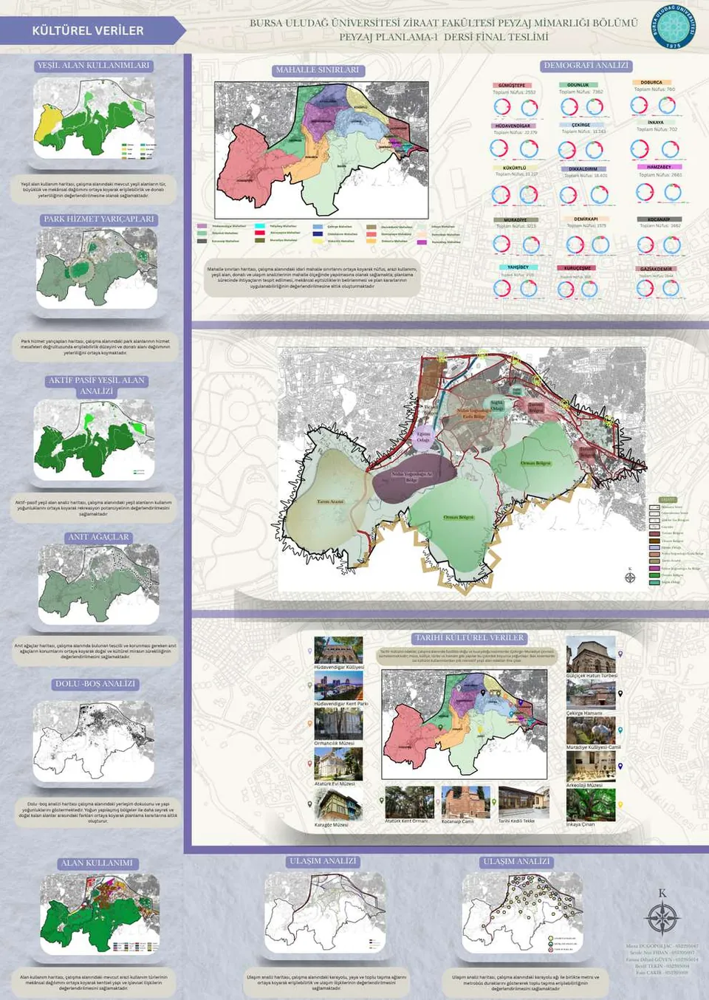
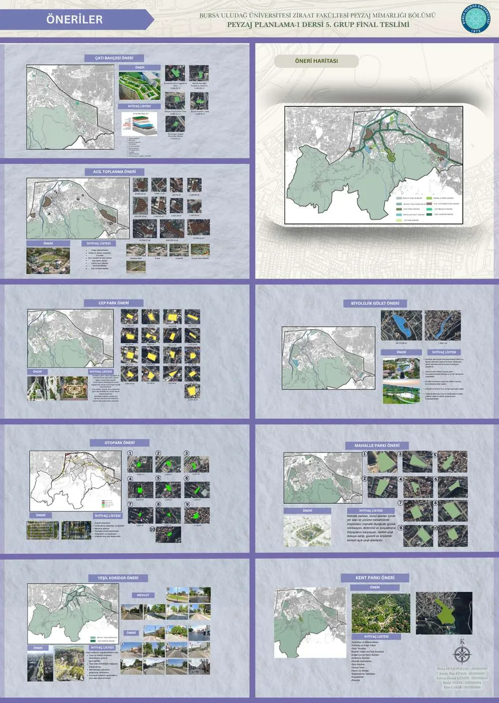
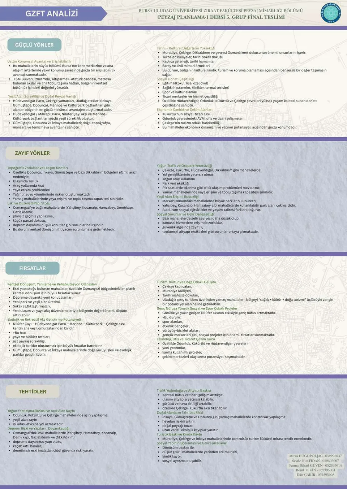

02 / PlanningPlanlama
Urban Landscape PlanningKentsel Peyzaj Planlama
Natural and cultural data translated into green-infrastructure and resilience strategies.Doğal ve kültürel verilerin yeşil altyapı ve dayanıklılık stratejilerine dönüştürülmesi.

TypeTürPlanningPlanlama
ContextBağlamNilüfer + Osmangazi, BursaNilüfer + Osmangazi, Bursa
FocusOdakGIS · synthesis · green infrastructure · resilienceCBS · sentez · yeşil altyapı · dayanıklılık
Project storyProje hikâyesi
This planning study evaluates topography, slope, aspect, hydrology, geology, soil, climate, flora-fauna and hazard data together with demographic structure, green-space access, land use, transportation and cultural values. The synthesis informs green infrastructure, ecological continuity, disaster resilience and accessible public-space strategies.Bu planlama çalışması; topoğrafya, eğim, bakı, hidroloji, jeoloji, toprak, iklim, flora-fauna ve risk verilerini; demografik yapı, yeşil alan erişimi, alan kullanımı, ulaşım ve kültürel değerlerle birlikte değerlendirir. Sentez; yeşil altyapı, ekolojik süreklilik, afet dayanıklılığı ve erişilebilir kamusal alan stratejilerine altlık oluşturur.
Drawings + visualsÇizimler + görseller
Explore the workÇalışmayı incele
Open any image to inspect the plan, model, render or presentation board at a larger scale.Plan, maket, render veya sunum paftasını daha büyük ölçekte incelemek için herhangi bir görseli aç.



